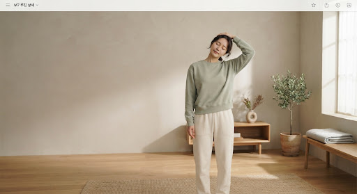

미리보기 1분목·어깨 풀기 스트레칭
거북목·어깨 결림에 맞아요. 앉아서 굳은 목 앞쪽을 늘리고 어깨를 내려 줘요. 아프기 직전까지만 늘리고, 숨은 참지 않아요.
20분 · 동작 8개 · 의자·바닥·벽 하나면 돼요 · 뛰는 동작 없음
동작 순서
- 1목 뒤를 길게 세워요1분
- 2어깨 위 근육을 좌우로 늘려요2분
- 3앞뒤로 크게 원을 그려요2분
- 4말린 어깨를 뒤로 펴요3분
- 5등 가운데를 조여 등을 펴요3분
- 6등을 둥글게 말았다 펴요3분
- 7벽에 팔을 대고 올렸다 내려요3분
- 8눈을 감고 천천히 숨 쉬며 마쳐요3분